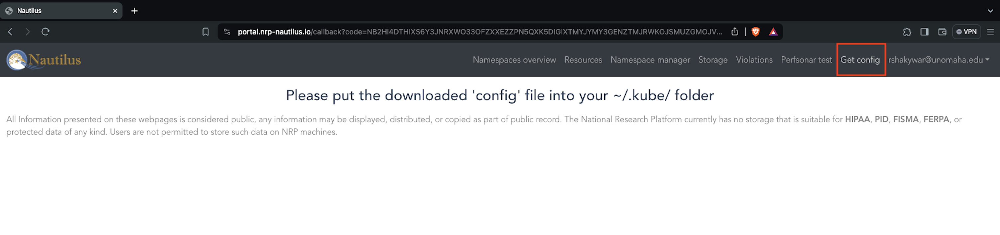
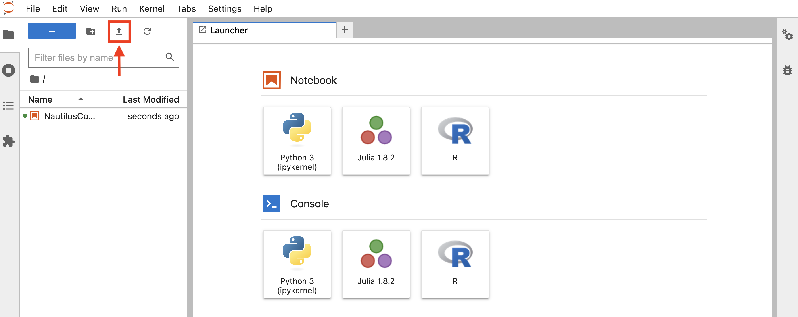
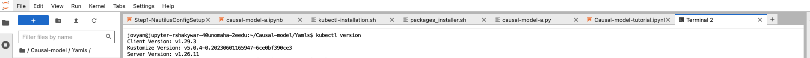
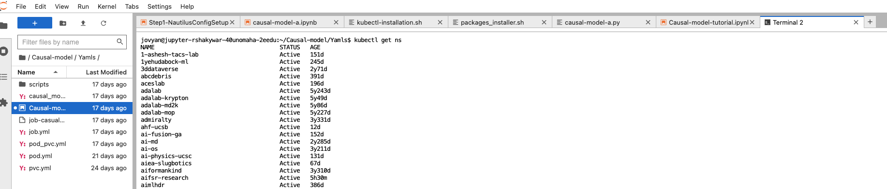
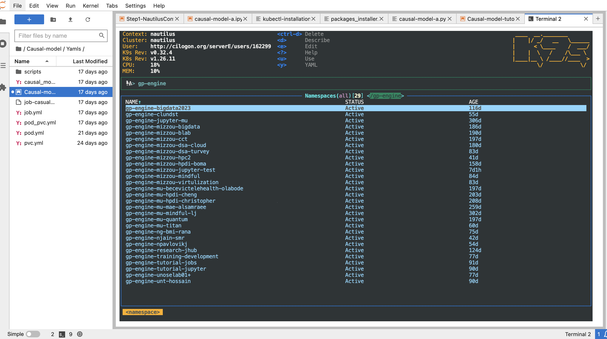

This notebook will help to install and configure kubernetes on your system, you can refer to the video tutorial below
Download the config file from NRP portal - https://portal.nrp-nautilus.io

From the Jupyter Lab interface, click on the Upload symbol, and select the config you have downloaded from the NRP portal

Install the kubectl in four steps (Ref: https://kubernetes.io/docs/tasks/tools/install-kubectl-linux)
Step I: Download kubectl binary
!curl -LO https://storage.googleapis.com/kubernetes-release/release/$(curl -s https://storage.googleapis.com/kubernetes-release/release/stable.txt)/bin/linux/amd64/kubectlStep II: Make kubectl executable
!chmod +x ./kubectlStep III: Move kubectl to /usr/local/bin to make it global command
!sudo mv ./kubectl /usr/local/bin/kubectlStep IV: Test the kubectl command

!kubectl versionStep IV: You will get the Client version if you able to successfully install kubernetes, now get all the namespaces to test the cluster if it correctly configured

!kubectl get nsInstall K9s tool to visualize the kubernetes resources without
entering kubectl commands
(Ref. https://webinstall.dev/k9s/)
Step I: Download script and then pipe it to shell
!curl -sS https://webi.sh/k9s | shStep II: Update PATH environment variable
!export PATH="$HOME/.local/bin:$PATH"Step III: Update .bashrc file
!source ~/.bashrcStep IV: Launch and test k9s tool

!k9s